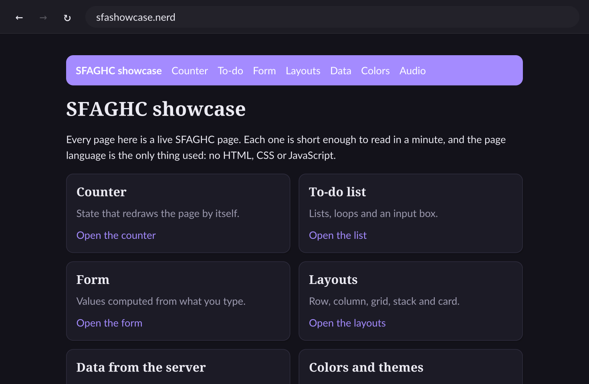
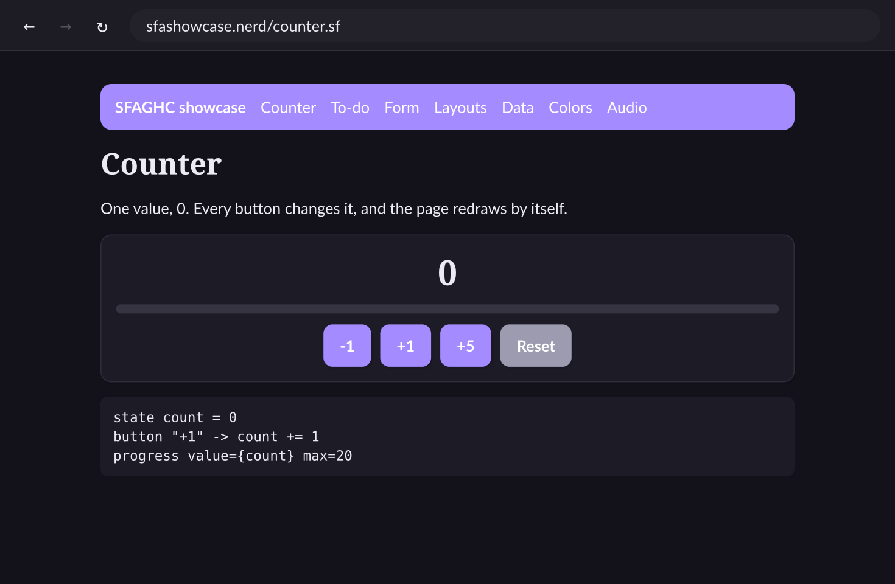

Sites with names like blog.nerd, pages written in one simple language, and a browser that fits in a few megabytes. Host your own site from a folder.
Light.web keeps the parts you actually use and leaves out the rest.
A site is found by name, like search.cool. The name service (SFW) tells the browser where the site lives and which fingerprint to trust.
SFAGHC holds structure, layout, style, state and logic in a single .sf file. A page can fetch data and react to clicks.
Every connection is encrypted and checked against the site's fingerprint. Tunnels only pass the traffic on.
lwserve serves a folder, opens a free tunnel and registers your name. A home connection is enough.
One line, download_hosted_file=/thing.zip, offers a file of up to 7000 GB. It streams straight to disk.
Anyone can run a read-only mirror of the name service. The browser picks the quickest one.
These are screenshots of the Light.web browser showing two pages of sfashowcase.nerd.

sfashowcase.nerd
Install the browser, press Cmd+L and type one of these names.
The SFAGHC guide: every element, setting and action, with examples you can copy.
A search engine for Light.web sites that describe themselves with crawl lines.
A small blog written entirely in SFAGHC, with posts, a theme and components.
A neutral, tech-only wiki that runs as a Light.web site.
The browser is a small Mac app for Apple Silicon and Intel. Hosting works on Linux, macOS and Windows.
One line puts Light.web.app in Applications. Open it, press Cmd+L and type sfadocs.nerd.
curl -fsSL https://raw.githubusercontent.com/Luishae07/lightweb/main/install-app.sh | shMake a folder with a front page called index.sf:
page "Hello"
document_description_crawl = "My first page"
column gap=16
h1 "Hello from my site"
text "It works."It works.
Install lwserve (Linux and macOS), then start it. -bore opens a free public tunnel and registers your name by itself:
curl -fsSL https://raw.githubusercontent.com/Luishae07/lightweb/main/install.sh | sh
lwserve -name mysite.nerd -bore -dir ./pagesWindows: download lwserve-windows-amd64.exe from the releases.
Lines nest by indentation. {expressions} inside text are filled in, and the page redraws when a value changes.
page "Counter"
state count = 0
column gap=12 align=center
h2 "Clicked {count} times"
button "Add one" -> count += 1
if count > 4
text "That is plenty."Components with slots, themes with dark mode, for loops, fetch and send to your own server, inputs and file downloads. The full guide is on the wiki, and as a site inside Light.web itself: open sfadocs.nerd.
Everything is on the latest release. SHA256SUMS lists the checksum of every file.
The Mac browser is not signed by Apple, so macOS asks you to confirm the first time: right-click the app, choose Open. The install line above avoids that.
The SFW is the name service. It is like a phone book: it knows where a site lives and which fingerprint to trust. It never sees a single page.
lwserve sends the SFW the name (mysite.nerd), its address (for example a tunnel), its certificate fingerprint and its public key, all signed with the site's private key. It repeats this every 10 minutes, so a moved tunnel is found again..nerd) must exist, the signature must be right and the clock must be within 10 minutes. A name is first come, first served: it belongs to whoever holds the key, so nobody else can take it over.mysite.nerd makes the browser ask the SFW LOOKUP mysite.nerd. The answer is the site's address and fingerprint (and its key, which also works as an address).The browser asks the name service where a site lives. Anyone can run a read-only mirror, so lookups still work when the main one is away. A mirror cannot change where a name points: every record carries the site owner's signature and the browser checks it. The browser reads nodes.txt every five minutes and uses the quickest node.
sfw -mirror <main SFW address> -bore -listen :7001With -bore the mirror opens a free public tunnel by itself and prints its address. Add that address to nodes.txt with a pull request. Details are in the README.
No. It is a small web of its own, with its own names, its own page language and its own browser. It runs next to the normal web and does not use it.
No. Names like mysite.nerd come from the Light.web name service, and lwserve -bore opens a free public tunnel by itself, so a home connection is enough.
Connections are encrypted and checked against the website's fingerprint, which the name service provides. A page can only talk to its own server: it cannot read your files or open other sites. Pages are text, so nothing runs on your computer.
The browser is for Mac, on Apple Silicon and Intel. lwserve, which hosts a website, runs on Linux, macOS and Windows. A phone version exists but is not released yet.
Nothing. Light.web is free and released under the MIT license.
The name service gives a name to whoever registers it first, and a name stays with the holder of its key. Anyone can run a read-only mirror of the name service to help keep names reachable.
The page language of Light.web: one text file with structure, layout, style, state and logic, and no closing tags. The guide is on the wiki and at sfadocs.nerd.